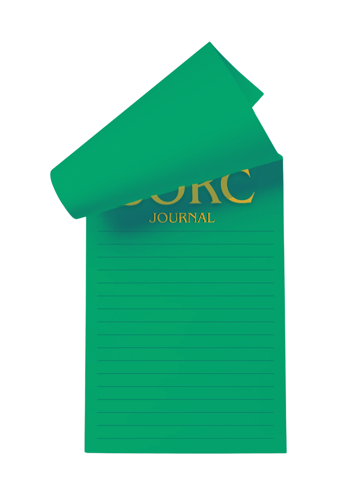
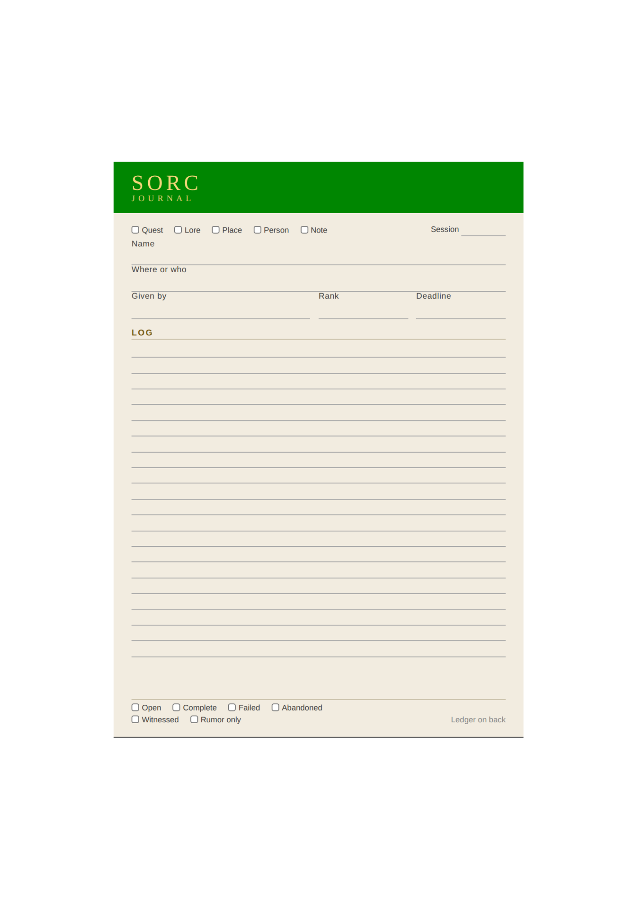
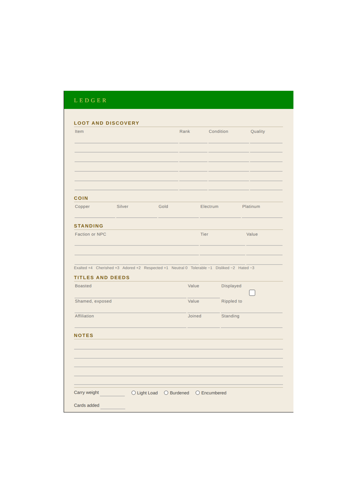

A journal captures a character's background story, mission, personal notes, quest logs, and important memories as their story unfolds.
Journal PDF
How to Use the Journal
The tear-away sheet is identical on both front and back, making it perfect for reference during gameplay. The front side tracks quests, discoveries, and important notes. The back side serves as a ledger for loot, coin, standing with factions, and character achievements. Check the boxes to categorize entries by Quest, Lore, Place, Person, or Note.
Example Pages

Cover Sheet

Page 1 Example

Page 2 Example
Download Your Own Tear-Away Sheet
Print the full PDF version (blank format) for home printing.
Download PDFOptimized for 5 in. × 7 in. booklet printing on standard paper.